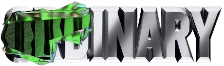

앨범 발매

2022년 3월 18일, 스트레이키즈는 한국 발매 미니앨범 중 6번째 앨범인 'ODDINARY'를 발매했습니다.
'ODDINARY'는 'Odd'와 'Ordinary'의 합성어로 누구나 평범해보여도 이상한 면을 가지고 있기에,
'이상한게 평범한것이다' 라는 의미를 지니고 있습니다.
Track List
총 7곡이 수록되어있고, 목록은 다음과 같습니다.
-
거미줄
마치 거미줄에 걸린 것처럼 상대방이 가진 치명적인 매력에서 빠져나올 수 없다는 내용을 담은 곡입니다.
-
MANIAC
해당 앨범의 타이틀곡입니다.
세상이 정한 평범하고 단순한 삶의 방식에 맞추지 않고, 스트레이키즈만의 'MANIAC' 적인 모습을 보여주는 곡입니다. -
Charmer
스트레이키즈만의 매력에 모두가 빠져들 수밖에 없다는 자신감을 표현한 곡입니다.
-
땡
스트레이키즈의 유쾌한 모습을 제대로 느낄 수 있는 곡으로, 문제를 헤쳐나가겠다는 의지를 가사에 녹여낸 곡입니다.
-
Lonely St.
스트레이키즈가 가는 길이 외롭고 힘든 길이라도 끝까지 갈 준비가 되어있다는 그룹의 방향성을 확실히 보여주는 곡입니다.
-
피어난다
겨울이 끝나고 찾아오는 포근한 봄 날씨와 어울리는 서정적인 곡으로, 덤덤하게 부른 보컬과, 점점 고조되는 분위기가 특징입니다.
방찬, 리노, 승민, 아이엔의 유닛곡입니다. -
Muddy Water
스트레이키즈의 상상력을 이해하지 않으려는 사람들에게 선전포고하는 곡입니다.
창빈, 현진, 한, 필릭스의 유닛곡입니다.
'빌보드 200' 1위 달성
2022년 3월 28일, 미니 6집 앨범 ODDINARY가 빌보드 200 차트 1위를 달성했습니다.
이는 방탄소년단,
SuperM에 이어 한국 가수 3번째 기록입니다.
2nd World Tour "MANIAC"
스트레이키즈의 2번째 월드투어입니다.
가장 최근 앨범인 ODDINARY의 타이틀곡인 'MANIAC'과 동명입니다.
2022년 4월 29일~ 5월 1일 잠실종합운동장 실내체육관에서
서울 콘서트를 마쳤습니다.
이후엔 2022년 6월 11일부터 일본, 미주 투어 등이 예정되어 있습니다.
4월 29일 콘서트는 저도 다녀왔는데요,
최근 코로나19로 인한 거리두기, 함성금지가 해제되면서 스트레이키즈 멤버들도, 저를 포함한 팬들도 신나게 공연을 즐길 수 있었습니다.